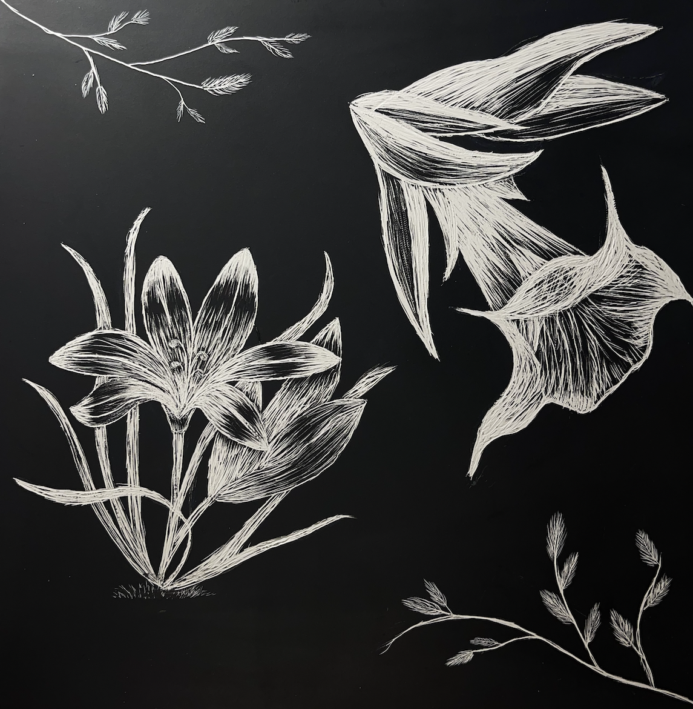

Glass Engravings
Orchid
Glass Engraving 5x7 in.
March 2024

This piece was my first time doing glass engraving. For this piece I used my nail drill to engrave the glass. I had a lot of fun doing this project because I was able to experiment with a different medium. I used two pieces of glass and layered them to create more dimension. Orchids are my favorite type of flower.
Crysanthemum
Glass Engraving 5x7 in.
March 2024

This was another glass engraving that has another one of my favorite type of flower. This was engraved on a single piece of glass and I chose to do this flower to add to the theme of my botanical project.
Rose
Glass Engraving 5x7 in.
March 2024

This glass engraving was something that I didn't plan out. I wanted to see where my mind would go without any planning or thought process.
The Jungle
Glass Engraving 12x14 in.
March 2024

The Jungle is a piece that I created to display how it looks inside my head. The flowers are all bunched together to show how my brain is not very organized.
Etchings
All were done in September 2023
Flower
Kame House